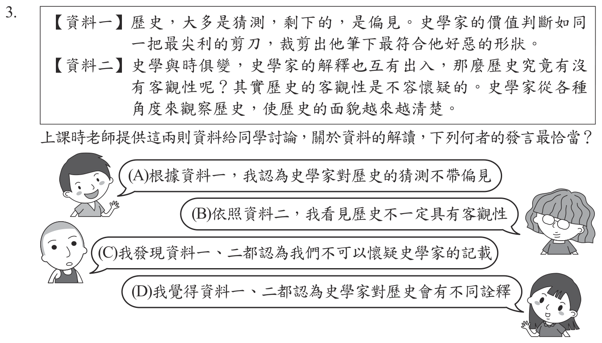
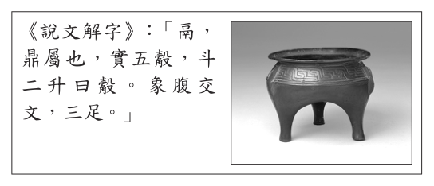
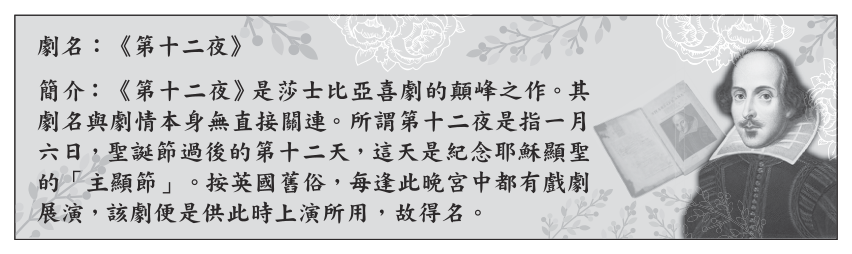
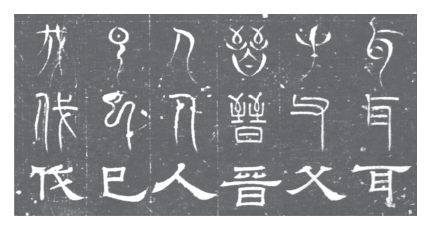
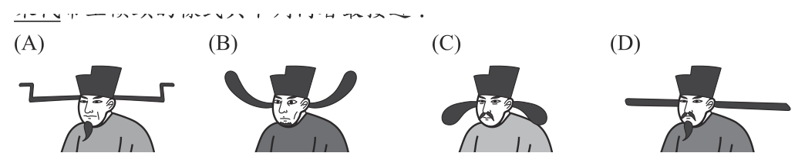
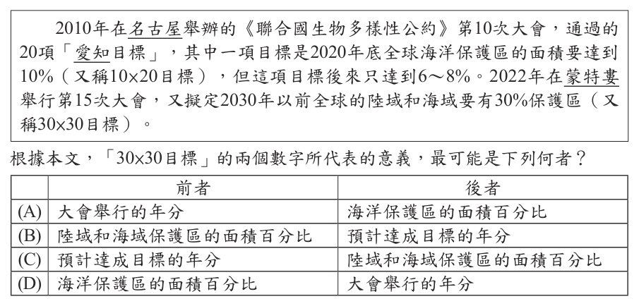
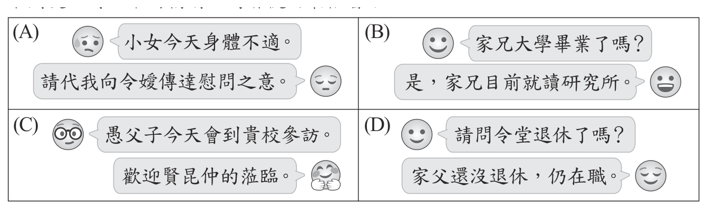
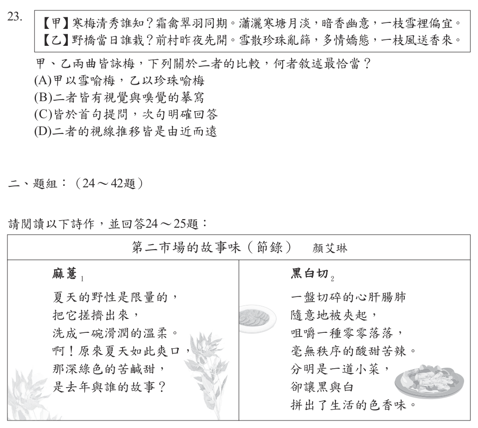
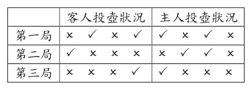

115 年國中教育會考國文試題與答案
這一頁是民國 115 年國中教育會考國文的整份歷屆試題，共 42 題，題目與標準答案出自心測中心 會考歷屆試題（依著作權法 §9，考試試題不受著作權保護），其中 42 題附有詳解。以下逐題列出題幹、選項與答案；要計時作答或記錄成績，請用線上練習。
線上作答這一科 →
全部 42 題
第 1 題
下列文句中的「即」字，何者為「靠近」之意？
- （A）被熱水燙傷之後，應該立「即」用大量冷水沖洗
- （B）他們兩個人的關係若「即」若離，真令人難以捉摸
- （C）本活動摸彩中獎者，憑票根「即」可至服務臺領取獎品
- （D）我不是你的傭人，別以為我可以招之「即」來，揮之即去
答案：（B）
詳解與考點
正解：「即」的「靠近」義。「若即若離」中的「即」是靠近，整個詞指忽近忽遠，B 正確。
A：「立即」的「即」是立刻。
C：「即可」的「即」是就、便。
D：「招之即來，揮之即去」的「即」是就。它看起來對，是因為都可譯為迅速發生，但並非「靠近」的意思。
本題考點：文言虛詞多義——判斷詞義要放回固定語詞與句意；「若即若離」的「即」表靠近，「立即」表立刻，「即可」與「即來」表就、便。
第 2 題
「臺灣泰式餐館幾乎都供應的椒麻雞，其實是出身雲南的混血菜。滇、緬、泰、越、寮位置鄰近，料理自然互相滲透，彼此影響。這道菜傳到泰北，再到臺灣，背景是烽火連天的歲月。像當年孤軍，遊走在滇、緬、泰邊境，流著四川的麻辣血源和泰國的酸辣風格。」關於料理的敘述，下列何者最接近本文的觀點？
- （A）料理會因地緣關係而互相影響
- （B）異鄉遊子對童年吃食特別難忘
- （C）戰火頻仍地區的料理多半偏辣
- （D）餐館會依消費者需求調整口味
答案：（A）
詳解與考點
正解：題幹以椒麻雞流傳滇、緬、泰邊境為例，並明說各地「料理自然互相滲透，彼此影響」。A 概括地緣關係會使料理互相影響，最接近本文觀點，故選 A。
B：文中沒有異鄉遊子或童年吃食的描述，錯誤。
C：四川麻辣與泰國酸辣是椒麻雞的來源背景，不能推成戰火地區料理多半偏辣，錯誤。
D：文中沒有餐館依消費者需求調整口味的內容，錯誤。
本題考點：短文主旨——找反覆出現且可統整事例的句子；推論判準——由個案可歸納文本明說的地緣影響，但不可擴大為未提的一般規律。
第 3 題
【資料一】歷史，大多是猜測，剩下的，是偏見。史學家的價值判斷如同一把最尖利的剪刀，裁剪出他筆下最符合他好惡的形狀。【資料二】史學與時俱變，史學家的解釋也互有出入，那麼歷史究竟有沒有客觀性呢？其實歷史的客觀性是不容懷疑的。史學家從各種角度來觀察歷史，使歷史的面貌越來越清楚。上課時老師提供這兩則資料給同學討論，關於資料的解讀，下列何者的發言最恰當？

本題選項為上圖中的 A／B／C／D，請對照圖片作答。
答案：（D）
詳解與考點
正解：資料一指出史學家會以價值判斷裁剪史料，資料二承認史學家的解釋互有出入、可從不同角度觀察。D 指出史學家對歷史會有不同詮釋，能同時涵蓋兩則資料，故選 D。
A：資料一明說歷史書寫可能帶有偏見，不能說史學家完全不受主觀影響，錯誤。
B：資料二明說歷史客觀性不容懷疑，不能解讀為歷史毫無客觀性，錯誤。
C：資料一正是提醒讀者應注意史學家的好惡與價值判斷，不能說毋須質疑其記載，錯誤。
本題考點：比較觀點——先找兩則資料共同承認的內容，再排除只符合其中一則或相反的說法；史學判準——詮釋可有差異，不等於歷史毫無客觀性。
第 4 題
根據右列資料判斷，「鬲」最可能屬於下列哪一種造字法則？

- （A）象形
- （B）指事
- （C）會意
- （D）形聲《說文解字》：「鬲，鼎屬也，實五觳，斗二升曰觳。象腹交文，三足。」
答案：（A）
詳解與考點
正解：資料說《說文解字》釋「鬲」為鼎屬，並說「象腹交文，三足」，顯示字形描摹三足器物的外觀。依物體形狀畫成文字屬象形，A 為正解。
B：指事字是在既有字形上加抽象符號指示意義；「鬲」直接描摹器物，不符合。
C：會意字由兩個或多個構件組合表達新意；「鬲」不是以構件會合表義，錯誤。
D：形聲字須有表義的形旁與表音的聲旁；資料強調其器物外形，沒有形旁、聲旁分工，錯誤。
本題考點：六書象形——依實物外觀描畫而成的字屬象形；判斷方法——資料若直接說明器物形狀或字形描摹特徵，優先判為象形，再排除指事、會意與形聲。
第 5 題
「散文貴在自由□體例的自由、選材的自由、篇幅的自由、表達思想的自由。寫作者可以依憑自己的認知，採用喜歡的書寫方式。」根據文意脈絡，缺空處最適合填入下列哪一個標點符號？
- （A）、
- （B）？
- （C）……
- （D）――
答案：（D）
詳解與考點
正解：題幹「散文貴在自由」後面接著列舉體例、選材、篇幅與思想表達四項自由，是總說後的解釋說明。D 破折號「――」可引出說明，讀成「散文貴在自由――也就是……」語意通順，故 D 為正解。
A：頓號用於並列詞語；此處前後是總說與具體說明，不能只用頓號連接。
B：問號用於疑問句，原句是陳述句，沒有詢問語氣。
C：省略號表示語句未盡或聲音延長；後文完整列舉，沒有省略。
本題考點：標點符號功能——總說後接具體說明時可用破折號；頓號連接並列詞語，問號標示疑問，省略號標示省略或語意未盡。
第 6 題
下列文句，何者用字完全正確？
- （A）看朋友有難，他一無反顧出面幫忙
- （B）我只是區區一個無名小足，人微言輕
- （C）各種詐騙手法層出不窮，令人防不慎防
- （D）早上公車發生擦撞，幸好乘客都安然無恙
答案：（D）
詳解與考點
正解：題幹要求用字完全正確，D 的「安然無恙」指平安沒有損傷，四字寫法正確，故 D 為正解。
A：「一無反顧」的「一」應改為表合乎道義的「義」，正字是「義無反顧」。
B：「無名小足」的「足」應改為士卒的「卒」，正字是「無名小卒」。
C：「防不慎防」的「慎」應改為勝過的「勝」，正字是「防不勝防」。
本題考點：成語字形辨識——逐字核對固定寫法，不可依同音或近形字替換；「義無反顧」、「無名小卒」、「防不勝防」皆須使用正字。
第 7 題
下列文句「」中的字，何者讀音正確？
- （A）海嘯過後，小鎮滿目「瘡」痍：ㄘㄤ
- （B）此事部長的心意已決，不容他人置「喙」：ㄓㄨㄛˊ
- （C）電影首映會當晚，導演「偕」同主要演員一起出席：ㄒㄧㄝˊ
- （D）這兩者「孰」輕孰重，你要考慮清楚，以免將來後悔：ㄕㄡˊ
答案：（C）
詳解與考點
正解：題幹要核對引號中字的標準讀音。C 的「偕」讀 ㄒㄧㄝˊ，「偕同」指一同、共同，標音正確，故 C 為正解。
A：「瘡」讀 ㄔㄨㄤ，不讀 ㄘㄤ。
B：「喙」讀 ㄏㄨㄟˋ，不讀 ㄓㄨㄛˊ。它看起來對，是因為字形較生僻，容易憑字形誤猜讀音。
D：「孰」讀 ㄕㄨˊ，不讀 ㄕㄡˊ。
本題考點：國字注音——以教育部標準讀音逐字核對；形近或語感相近不能作為讀音判準，須辨明「瘡」ㄔㄨㄤ、「喙」ㄏㄨㄟˋ、「孰」ㄕㄨˊ。
第 8 題
根據資料，下列關於《第十二夜》的推論，何者最恰當？

- （A）旨在陳述耶穌受難一事
- （B）每年固定連續演出十二天
- （C）劇名由來與主顯節的日期有關
- （D）英國宮廷因此劇而有戲劇展演的習俗
答案：（C）
詳解與考點
正解：資料提到主顯節在聖誕節後第 12 天，即 1 月 6 日；劇名「第十二夜」正是由這個日期而來。C 的推論有資料依據，故為正解。
A：資料沒有說此劇旨在陳述耶穌受難，不能由節日名稱推得劇情主旨。
B：第十二夜是節日日期的名稱，不等於每年固定連續演出 12 天。
D：資料未建立英國宮廷因這齣劇才形成戲劇展演習俗的因果關係。
本題考點：資料閱讀推論——推論須能由文本明示資訊支持；日期由來可支持劇名來源，未提及的劇情、演出天數或因果關係不可自行補入。
第 9 題
「烘書之情何所似，有如老翁撫病子。心知元氣不可復，但求無死斯足矣。書燒之時又何其，有如慈父怒啼兒。恨死擲去不回顧，徐徐復自撫摩之。此情自痴還自笑，心血既乾轉煩惱。上壽八十能幾何，為爾多累何其多。」關於這首詩的說明，下列敘述何者最恰當？
- （A）「心知元氣不可復」指作者時日無多而焚書
- （B）「恨死擲去不回顧」代表愛書之情至死不渝
- （C）「徐徐復自撫摩之」表達作者不忍書燒之情
- （D）「上壽八十能幾何」意指書籍保存有其時限
答案：（C）
詳解與考點
正解：詩中先以父親怒對啼兒比喻作者氣惱書受損而想丟開，隨後「徐徐復自撫摩之」寫他又慢慢撫摸書本，顯出不忍書被烘壞的憐惜。C 符合詩意，故為正解。
A：「元氣不可復」承接病子的比喻，指書本受損後難以恢復，不是作者自覺時日無多。
B：「恨死擲去不回顧」是盛怒時暫時拋開書本，不是愛書至死不渝。
D：「上壽八十能幾何」感嘆人生短暫、為書操勞太多，不是說書籍保存有時限。
本題考點：詩句涵義——先辨認比喻的對象，再由前後動作推知情感；「撫摩」對應憐惜不忍，「上壽八十」對應人生有限。
第 10 題
《魏三體石經》每字皆刻三種字體，右圖為部分拓本，已知其中二種字體為古文、篆書。據此判斷，圖中第三種字體應為下列何者？

- （A）行書
- （B）草書
- （C）楷書
- （D）隸書
答案：（D）
詳解與考點
正解：《魏三體石經》每字並刻的三種字體。已知其中兩種是古文、篆書，第三種即為隸書，故 D 正確；隸書是漢代通行的官方正體，時代上承篆書。
A：行書不是三體石經所用的第三種字體。
B：草書不是三體石經所用的第三種字體。
C：楷書不是三體石經所用的第三種字體。
本題考點：漢字字體演變——三體石經並刻古文、篆書、隸書；依史料名稱與已知兩體補足第三體時，應用固定組合，不以書寫速度或字形印象猜測。
第 11 題
所謂的「寫真式描寫」注重的是清楚明確，以細密的筆觸刻畫完整的形象，讓讀者有身歷其境的真實感。其描寫則依次序按部就班，傳達時力求客觀。但既是創作，就不可能像攝影一樣完全「再現」，也難免會滲入少許暗示性、象徵性的語彙。根據本文，下列何者最符合「寫真式描寫」？
- （A）他們明明知道要滴下眉毛上的汗珠，才能撿起田中的麥穗，而為什麼要謝天
- （B）他用兩手攀著上面，兩腳再向上縮，他肥胖的身子向左微傾，顯出努力的樣子
- （C）頃刻間這周遭瀰漫了清晨富麗的溫柔，頃刻間你的心懷也分潤了白天誕生的光榮
- （D）有一些事，卻像夏日的小河、冬天的落葉，像春花，也像秋草，似無所見，又非視而不見
答案：（B）
詳解與考點
正解：題幹定義「寫真式描寫」重視清楚明確、細密刻畫完整形象，並依次序客觀傳達。B 寫父親「兩手攀著上面，兩腳再向上縮，肥胖的身子向左微傾」，按動作先後細寫姿態，客觀呈現努力的樣子，符合寫真式描寫，故 B 為正解。
A：句中「而為什麼要謝天」帶有評論與感情態度，不是客觀、按步驟的形象刻畫。
C：以「清晨富麗的溫柔」與「白天誕生的光榮」營造象徵性情感，並非細密寫實。
D：連用夏日小河、冬天落葉、春花、秋草等比喻，語意含蓄而非清楚具體描寫；它看起來優美，但正是題幹所說滲入象徵性的寫法。
本題考點：寫真式描寫——以具體可見的動作、形貌或順序，清楚細密地呈現對象；文體判讀——有強烈評論、象徵或連串比喻時，通常不屬客觀寫實的描寫。
第 12 題
宋趙彥衛《雲麓漫鈔》：「五代帝王多裹朝天襆頭，二腳上翹。四方之主，各創新樣，或翹上而反折於下，或如團扇蕉葉之狀，合抱於前。後蜀之君始以漆紗為之，楚國國主二角左右長尺餘，謂之龍角，人或誤觸之，則終日頭痛。至後漢高祖裹襆頭，左右長尺餘，橫直之，不復上翹，迄今不改。」根據本文，宋代帝王襆頭的樣式與下列何者最接近？

本題選項為上圖中的 A／B／C／D，請對照圖片作答。
答案：（D）
詳解與考點
正解：「迄今不改」所承接的樣式。文末說後漢高祖襆頭「左右長尺餘，橫直之，不復上翹」，宋代沿用此式，因此應選兩腳平直橫展、不上翹的 D。
A：上翹的樣式屬五代帝王常見的新樣，不是宋代沿用式。
B：彎折的樣式是文中所說「翹上而反折於下」的一類。
C：合抱於前如團扇、蕉葉的樣式，也是五代各國所創的新樣。
本題考點：文言文圖像比對——先抓末句的形制關鍵詞，再對照圖像；「橫直」、「不復上翹」表示兩腳左右平伸，不可選上翹、彎折或前抱的款式。
第 13 題
齊高帝善草書，篤好不已，祖述子敬，稍乏風骨。嘗與王僧虔賭書，書畢曰：「誰為第一？」對曰：「臣書臣中第一，陛下書帝中第一。」帝笑曰：「卿可謂善自謀矣。」然高帝與僧虔賭書，亦猶雞之搏狸，稍不自知量力也。關於文中人物書法的比較，下列敘述何者最恰當？
- （A）作者認為高帝書法不如僧虔
- （B）作者認為子敬書法天下第一
- （C）子敬覺得高帝的草書缺乏風骨
- （D）僧虔自認與高帝賭書猶雞之搏狸
答案：（A）
詳解與考點
正解：作者用「雞之搏狸」作何比較。雞搏狐狸比喻力量懸殊，高帝與僧虔賭書而「稍不自知量力」，可知作者認為高帝書法不如僧虔，A 正確。
B：文中沒有說子敬書法天下第一；只說高帝祖述子敬而稍乏風骨。
C：「稍乏風骨」是作者對高帝書法的評論，不是子敬的說法。
D：「雞之搏狸」是作者對高帝挑戰僧虔的比喻，不是僧虔自認。
本題考點：文言文人物比較——比喻的施受對象要辨清；「雞搏狸」以弱對強，結合「不自知量力」可判斷作者貶高帝、推崇僧虔。
第 14 題
2010年在名古屋舉辦的《聯合國生物多樣性公約》第10次大會，通過的 20項「愛知目標」，其中一項目標是2020年底全球海洋保護區的面積要達到 10%（又稱10 × 20目標），但這項目標後來只達到6～8%。2022年在蒙特婁舉行第15次大會，又擬定2030年以前全球的陸域和海域要有30%保護區（又稱30 × 30目標）。根據本文，「30 × 30目標」的兩個數字所代表的意義，最可能是下列何者？前者後者

- （A）大會舉行的年分
- （B）陸域和海域保護區的面積百分比預計達成目標的年分
- （C）預計達成目標的年分
- （D）海洋保護區的面積百分比陸域和海域保護區的面積百分比大會舉行的年分海洋保護區的面積百分比
答案：（B）
詳解與考點
正解：題幹以「10×20目標」說明命名方式：10 是海洋保護區面積目標 10%，20 是 2020 年底的達成年分。依同一規則，「30×30」的前者是陸域和海域保護區面積 30%，後者是預計於 2030 年以前達成，B 為正解。
A：兩個數字不是大會舉行的年分；第15次大會在 2022 年舉行，與 30×30 的數字不合，錯誤。
C：把 30 解作預計達成的年分，混淆百分比與年分的順序，錯誤。
D：把前者限縮為海洋保護區面積百分比，但原文寫的是「陸域和海域」皆要有 30% 保護區，錯誤。它看起來對，是因為前文的 10×20 確實只談海洋保護區，容易忽略後文已擴及陸域。
本題考點：資訊閱讀——數字詞要回扣原文，分別確認數值、單位與時間；類比推論——先由 10×20 的命名規則建立判準，再套用到 30×30。
第 15 題
「吉爾吉斯毛氈地毯色彩鮮豔，圖案多樣，製作技藝與知識通常由家族的年長婦女傳授，完成後可用上至少30年。年長者會在動工與結束時祈福，製作時需靠團隊合作：在年長婦女的監督下，由年輕婦女執行，男性則負責剃羊毛、幫忙壓製，最後拿去販賣。這不但是吉爾吉斯人最重要的工藝之一，也有助社群凝聚，創造認同感與文化延續性，因此獲得聯合國教科文組織認可為文化遺產。」根據本文，吉爾吉斯毛氈地毯有助社群凝聚、創造認同感與文化延續性的原因，最不可能是下列何者？
- （A）成品可以使用至少30年
- （B）需要團隊分工合作才能完成
- （C）由年長婦女教導年輕婦女製作
- （D）年長者會在動工與結束時祈福
答案：（A）
詳解與考點
正解：題幹問的是造成「社群凝聚、認同感與文化延續性」的原因，須找出能讓人際互動或文化傳承持續發生的作法。A 的成品可使用至少30年，只說明地毯耐用，未說明人們如何合作、傳承或建立認同，故 A 為最不可能的原因。
B：製作時由不同成員分工合作，能促進社群成員的互動與凝聚，不能選。
C：年長婦女教導年輕婦女製作，使技藝與知識代代傳承，有助文化延續，不能選。
D：年長者在動工與結束時祈福，是共同參與的儀式，可強化認同感，不能選。
本題考點：文本因果判讀——先區分產品本身的特性與社群功能；社群凝聚的判準——能促成共同參與、合作、儀式或文化傳承的內容，才可作為原因。
第 16 題
下列友人對話中的稱謂，何者使用最恰當？

本題選項為上圖中的 A／B／C／D，請對照圖片作答。
答案：（A）
詳解與考點
正解：題幹考謙辭與敬辭的對象。A 的「小女」是謙稱自己的女兒，「令嬡」是敬稱對方的女兒，符合自謙敬人的原則，故 A 為正解。
B：「家兄」是對人謙稱自己的兄長，不能用來詢問對方的兄長。
C：「愚父子」不是此處可主動使用的恰當自稱，稱謂對象與語境不合。
D：「令堂」是敬稱對方母親，「家父」是謙稱自己父親；題句前後稱謂的對象用錯。
本題考點：謙敬辭——稱己方親屬用謙辭，稱對方親屬用敬辭；常見稱謂——小女、家兄、家父稱己方，令嬡、令堂稱對方。
第 17 題
「宋代賈似道的《促織經》是橫跨哲學、文學、醫學與口傳知識的系統性著作，足以與現代問世的偉大昆蟲手冊相提並論，而歐洲最早的昆蟲專書則是在《促織經》成書將近三百年後才出版。但賈似道的企圖心與歐洲博物學家不同，他不像他們那樣對收集充滿熱情，或想用自己的方式擁有自然界。他只想寫給喜愛鬥蟋蟀的賭徒參考。」根據本文，下列關於《促織經》的推論何者最恰當？
- （A）是歐洲昆蟲專書的啟蒙
- （B）是中國最早的跨領域學術研究
- （C）意在激發人們探索自然的熱情
- （D）教人如何提高鬥蟋蟀的致勝機率
答案：（D）
詳解與考點
正解：題幹末句「只想寫給喜愛鬥蟋蟀的賭徒參考」直接點出《促織經》的寫作目的。D 指向提供鬥蟋蟀者參考，以提高致勝機率，最符合文意，故選 D。
A：文中只說《促織經》比歐洲最早的昆蟲專書早近300年，沒有說它啟發或影響歐洲，錯誤。
B：文章稱其橫跨哲學、文學、醫學與口傳知識，並未說是中國最早的跨領域研究，錯誤。
C：賈似道不像歐洲博物學家般熱中收集自然，寫作也不是要激發探索自然的熱情，錯誤。
本題考點：閱讀推論——先抓作者明說的寫作目的，再判斷選項是否超出文本；限定詞判準——「最早」、「啟蒙」須有明確證據，僅有年代先後不能推出影響關係。
第 18 題
「子產相鄭，往見壺丘子林，與其弟子坐，必以年之，謀志論行，而以心與人相索，其唯子產乎？故相鄭十八年，唯刑三人、殺二也。」關於文中子產的敘述，下列何者最恰當？人，桃李之垂於行者，莫之援
- （A）求才若渴，四處招募各國的賢士
- （B）認為教育乃治國根本，極力興學
- （C）推行嚴刑峻法，令人民路不拾遺
- （D）跳脫身分貴賤的框架，以誠待人
答案：（D）
詳解與考點
正解：題幹以「必以年之，謀志論行，而以心與人相索」描寫子產待人，關鍵在依年齡而非身分排座，並真誠考察志向與品行。D 說他跳脫身分貴賤、以誠待人，最恰當，故選 D。
A：文中寫子產接見壺丘子林與弟子，沒有四處招募各國賢士，錯誤。
B：文中沒有興辦教育的內容，錯誤。
C：子產相鄭18年只刑3人、殺2人，正顯示用刑極少，非嚴刑峻法，錯誤。
本題考點：文言文人物評析——將「以年之」、「以心與人相索」譯成待人原則；細節判準——人物作風須由原文行為與結果判讀，不可加入未提的政策。
第 19 題
下列文句「」中的成語，何者使用最恰當？
- （A）這篇作品文采出眾，「胸無點墨」的人是寫不出來的
- （B）辛勤工作之餘也要適時休息，才能達到「休戚與共」
- （C）這兩個友好的國家交流往來頻繁，關係「間不容髮」
- （D）他嚮往「瓜田李下」的鄉間生活，毫不猶豫搬離市區
答案：（A）
詳解與考點
正解：題幹要判斷成語是否符合上下文。A 的「胸無點墨」指沒有學問；說文采出眾的作品不是胸無點墨的人寫得出來，語意通順，故選 A。
B：「休戚與共」指共同承擔憂樂、禍福，不能表示工作與休息要取得平衡，錯誤。
C：「間不容髮」形容情勢危急或距離極小，不用來形容兩國友好且往來頻繁，錯誤。
D：「瓜田李下」指容易引起嫌疑的場合，不是鄉間生活的代稱，錯誤。
本題考點：成語辨義——先掌握成語的固定義，再代入全句檢驗搭配；否定義判準——「胸無點墨」帶否定義，與「寫不出來」搭配後語意仍連貫。
第 20 題
蔣堂為淮南轉運使，屬縣依例致賀，皆投書即還。有一縣令使人，獨求回書，左右諭之皆不聽，呵逐亦不去，曰：「寧得罪，不得書不敢回邑。」時蘇子美在座頗駭怪，曰：「小吏如此野狠，其令可知。」蔣曰：「不然，令必能者，使人不敢慢其命令如此。」乃為簡答之，方去。子美歸吳中月餘，得蔣書曰：「縣令果能者。」遂為之延譽，後卒為名臣。關於文中人物的敘述，下列何者最恰當？
- （A）小吏仗勢欺人，目無尊長
- （B）縣令治事有方，管理嚴格
- （C）蔣堂寫信推薦蘇子美為吳中令
- （D）蘇子美有識人之明而成為名臣
答案：（B）
詳解與考點
正解：小吏寧可得罪也要拿到回書，顯示他不敢違背縣令命令；蔣堂因此判斷「令必能者」，後來又證實「縣令果能者」。B 說縣令治事有方、管理嚴格，最恰當，故選 B。
A：小吏是在執行縣令交辦的命令，不能據此說他仗勢欺人、目無尊長，錯誤。
C：蔣堂寫信說的是縣令果然能幹，沒有推薦蘇子美擔任吳中令，錯誤。
D：蘇子美起初把小吏誤判為「野狠」，有識人之明的是蔣堂；成為名臣者也是縣令，錯誤。它看起來對，是因為句中提到蘇子美與名臣，卻混淆了評斷者與被稱許者。
本題考點：文言文人物評析——由部屬執行命令的態度推知主管治理；人物對應判準——逐一核對誰作判斷、誰受推薦、誰後來成名。
第 21 題
或問：「世間何物最硬？」曰：「石頭與鋼鐵。」其人曰：「石可碎，鐵可鏨1，安得為硬？以弟看來為兄面上髭鬚最硬，鐵石總不如也。」問其故，答曰：「兄面皮厚，竟被看出。」鬚者回嘲曰：「足下面皮更老，這等硬鬚還鑽不透。」根據這則笑話，以鬚者的立場來看，下列何者最硬？
- （A）石頭與鋼鐵
- （B）鬚者的面皮
- （C）面皮上的髭鬚
- （D）無鬚者的面皮
答案：（D）
詳解與考點
正解：鬚者反嘲「足下面皮更老，這等硬鬚還鑽不透」，把無鬚者的面皮說成連硬鬚都穿不透。依鬚者的立場，D 的無鬚者面皮最硬，故選 D。
A：石頭可碎、鋼鐵可鏨，正是笑話先否定的答案，錯誤。
B：鬚者雖先稱髭鬚硬，後來又被無鬚者面皮更硬所反駁，錯誤。
C：髭鬚被說成鑽不透無鬚者的面皮，表示它不及面皮硬，錯誤。
本題考點：笑話文本邏輯——依指定人物最後的反駁判斷立場；比較判準——「連……都鑽不透」表示被比較者更硬。
第 22 題
「往年士大夫好講水利。有言欲涸梁山泊以為農田者，或詰之曰：『梁山泊涸之，不幸秋夏之交，行潦四集，諸水並入，何以受之？』貢父適在坐，徐曰：『卻於泊之傍鑿一池，大小正同，則可受其水矣。』坐中皆絕倒，言者大慚沮。」關於文中眾人對水利的想法，下列敘述何者最恰當？
- （A）為解決梁山泊秋夏淹水的問題，士大夫提議涸梁山泊為田
- （B）提出詰問的人擔憂梁山泊因泥沙淤積而難以吸納大量洪水
- （C）貢父表面提出方法，實則藉此凸顯欲涸梁山泊為田的荒謬
- （D）眾人對貢父的想法不以為然，仍堅持涸梁山泊為田的建議
答案：（C）
詳解與考點
正解：題幹關鍵是貢父說在梁山泊旁再鑿一個同樣大的池，這並非可行方案，而是用同樣荒謬的做法反襯原先涸泊為田的主張。眾人「絕倒」、言者「大慚沮」也證實其諷刺效果，故 C 正確。
A：士大夫是為了取得農田而想涸梁山泊，不是在解決秋夏淹水問題，錯誤。
B：詰問者擔心的是秋夏行潦四集、諸水並入時無處容納，未提泥沙淤積，錯誤。
D：眾人絕倒是大笑，提議者也大感羞愧沮喪，並非仍堅持原議，錯誤。
本題考點：反諷手法——表面提出方法，實際藉其不合理凸顯原主張荒謬；情態詞判準——「絕倒」、「大慚沮」顯示眾人否定而非支持提案。
第 23 題
【甲】寒梅清秀誰知？霜禽翠羽同期。瀟灑寒塘月淡，暗香幽意，一枝雪裡偏宜。【乙】野橋當日誰栽？前村昨夜先開。雪散珍珠亂篩，多情嬌態，一枝風送香來。甲、乙兩曲皆詠梅，下列關於二者的比較，何者敘述最恰當？

- （A）甲以雪喻梅，乙以珍珠喻梅
- （B）二者皆有視覺與嗅覺的摹寫
- （C）皆於首句提問，次句明確回答
- （D）二者的視線推移皆是由近而遠二、題組：（24 ～ 42題）請閱讀以下詩作，並
答案：（B）
詳解與考點
正解：比較兩曲的感官描寫，甲有「霜禽翠羽」的視覺與「暗香幽意」的嗅覺；乙有「雪散珍珠亂篩」的視覺與「一枝風送香來」的嗅覺。B 最恰當，故選 B。
A：甲的「雪裡偏宜」是寫梅花在雪中相宜，非以雪比喻梅；乙才以珍珠比擬雪景，錯誤。
C：甲首句「寒梅清秀誰知」與乙首句「野橋當日誰栽」雖皆提問，次句都未作明確回答，錯誤。
D：甲由霜禽、寒塘月等較遠景推到「一枝雪裡」，乙亦非一致由近而遠，錯誤。
本題考點：詩詞比較——把意象依視覺、嗅覺等感官分類後比對；比喻判準——須有本體與喻體的比擬關係，僅寫物體所在環境不等於比喻。
第 24 題
關於這二節詩的分析，下列敘述何者最恰當？
- （A）第一節以「野性」暗示作者正值年少
- （B）第二節以「切碎」呼應「零零落落」
- （C）第一節穿插驚嘆語句，表達吃不到的遺憾
- （D）第二節藉心肝腸肺的描摹，象徵人心險惡
答案：（B）
詳解與考點
正解：題幹要求判斷對這二節詩的分析何者最恰當。第二節「一盤切碎的心肝腸肺」寫黑白切的食材被切碎，「咀嚼一種零零落落」以口感呼應「切碎」的意象，故 B 正確。
A：第一節「夏天的野性是限量的」寫的是麻薏（黃麻嫩芽）夏日的野生鮮味，並非暗示作者正值年少。
C：第一節「啊！原來夏天如此爽口」的驚嘆是讚歎麻薏的清爽滋味，表達的是享受而非吃不到的遺憾。
D：第二節的心肝腸肺是黑白切的內臟食材，描摹的是小菜的滋味與生活感，並非象徵人心險惡。
本題考點：新詩意象分析——先辨明每節所詠食物（麻薏／黑白切）的具體描寫，再核對選項是否符合詩句字面與情味；「切碎」呼應「零零落落」是第二節的內在意象連結。
第 25 題
關於這二節詩的共同點，下列敘述何者最恰當？
- （A）皆透過描寫食物帶出生活的況味
- （B）皆引用典故連結食物與文化的關係
- （C）皆各自運用兩種顏色的對比，意象鮮明
- （D）皆以當季食材入詩，強調美好事物稍縱即逝請閱讀以下資料，並
答案：（A）
詳解與考點
正解：題幹問這二節詩的共同點何者最恰當。兩節分別詠麻薏湯與黑白切，皆藉市場食物帶出日常生活的情味與況味，故 A 正確。
B：兩節詩皆直寫對食物的感受，並未引用任何典故來連結食物與文化。
C：僅第二節出現「黑與白」的顏色對比，第一節並無明顯兩種顏色對比，故非「皆」各自運用。
D：麻薏雖屬夏季，黑白切並非當季限定食材；且全詩主旨在生活情味，而非強調美好事物稍縱即逝。
本題考點：新詩主題比較——比較題須找「共同」成立於兩節者；藉食物寫生活況味兩節皆備（共同點），顏色對比、當季食材、引用典故等只成立於單節或不成立，即為誘答。
第 26 題
根據甲文，下列關於垂直農場的推論，何者最恰當？
- （A）產量與用水量皆高出土壤種植方式
- （B）受天然風災直接的影響少於傳統農業
- （C）亞洲因生產成本較低，更適合垂直農場的發展
- （D）2050年全球將有七成的人必須吃垂直農場栽種的蔬菜
答案：（B）
詳解與考點
正解：甲文說垂直農場在密閉室內種植，關鍵是「密閉室內」；這使其較少直接受到颱風、豪雨等天然風災影響，因此 B 為正解。
A：文中指出垂直農場用水量僅為傳統土壤種植方式的十分之一，並非用水量較高，錯誤。
C：甲文沒有以「亞洲生產成本較低」推論亞洲更適合發展垂直農場，錯誤。
D：文中所述 2050 年全球約七成人口將居住在城市，並不是七成人必須吃垂直農場栽種的蔬菜，錯誤。它看起來對，是因為把「居住城市的人口比例」誤換成「食用垂直農場蔬菜的人口比例」。
本題考點：說明文推論——推論必須以原文已提供的條件為依據；垂直農場特性——室內密閉種植可減少天然風災的直接影響，且用水量低於傳統土壤種植。
第 27 題
「循環經濟」強調的是資源可持續回復，循環再生。乙文畫線處的做法，何者最能呼應「循環經濟」？
- （A）①
- （B）②
- （C）③
- （D）④
答案：（B）
詳解與考點
正解：題幹以「資源可持續回復，循環再生」界定循環經濟。②將高爾夫球場、運動場的草屑及啤酒廠用過的穀物、麩轉作乳牛飼料，是把廢棄資源再投入生產，最能呼應概念，故選 B。
A：①說明乳牛產奶量，未呈現資源回收或再利用，錯誤。
C：③的排泄物再製肥料也具有循環成分，但本題問最能呼應者；②更直接呈現廢棄物回到生產鏈的作法，錯誤。
D：④是就地銷售以減少運輸成本，重點在縮短運輸，非資源循環再生，錯誤。
本題考點：概念對應——循環經濟須看資源是否被回收並再投入使用；比較判準——多個選項皆有環保效果時，選最直接符合題幹定義者。
第 28 題
乙文提及「研究人員指出這種模式可能較適合用在農業而非畜牧業」，其原因最可能是下列何者？
- （A）友善動物
- （B）生產效能
- （C）產品價格
- （D）消費需求
答案：（A）
詳解與考點
正解：研究人員認為乳牛應在自然棲息地漫步，將牠們搬進高度工業化環境不是應有的對待方式。這是對動物福利的關切，A「友善動物」最符合，故選 A。
B：文中沒有以生產效能作為研究人員反對畜牧模式的理由，錯誤。
C：文中雖提到投入3億歐元，研究人員的引言未談產品價格，錯誤。
D：文中沒有以消費需求說明這項判斷，錯誤。
本題考點：閱讀推論——依引言中的價值判斷找原因；關鍵詞判準——「自然棲息地」、「對待牠們」指向動物福利，不可改作成本或市場議題。
第 29 題
根據甲、乙二文，「垂直農場」與「漂浮牧場」共同的特點不包含下列何者？
- （A）可以減少食物里程
- （B）設置地點都在城市
- （C）生產所需的資金成本高
- （D）運作時需投入大量人力請閱讀以下文章，並
答案：（D）
詳解與考點
正解：題幹問兩者共同特點「不包含」何者，須逐項比對甲、乙文。乙文明示擠奶、清理排泄物由機器代勞，甲文則未說運作時需要投入大量人力，因此兩文沒有共同證據支持D「運作時需投入大量人力」，故D為正解。
A：甲文說樓上種菜、樓下賣菜以縮短食物里程；乙文可直接將乳製品銷往當地以減少運輸成本，兩者皆符合，錯誤。
B：甲文是城市垂直農場，乙文把牧場搬到城市河岸或海岸線，兩者設置地點都在城市，錯誤。
C：甲文明言生產成本太高，乙文耗資三億歐元興建，兩者皆顯示資金成本高，錯誤。
本題考點：比較閱讀——分別在兩文找同一選項的明確證據，再判定是否共同具備，不能把一文未提及的內容推成事實；反向題幹——看到「不包含」要找兩文無法同時支持的敘述。
第 30 題
根據本文，畫線處的文句何者最能看出爸爸對孩子的重視？
- （A）①
- （B）②
- （C）③
- （D）④
答案：（D）
詳解與考點
正解：題目要找最能看出爸爸重視孩子的文句，應比較各句表達情感的直接程度與強度。④「有史以來最珍貴的船貨」以最高程度的語氣把孩子比作無可比擬的珍寶，最直接、最強烈地凸顯爸爸的重視，故 D 為正解。
A：①希望孩子記住故鄉，表現父親對家園記憶的珍惜，未直接強調孩子本身的珍貴，錯誤。
B：②回憶與孩子母親散步的生活情景，呈現懷念與關愛，但不如④直接表明孩子的珍貴，錯誤。
C：③描寫海上處境危險，能看出父親的憂慮；它看起來對，是因為危險情境確實襯出保護孩子的心情，但最強烈的重視仍在④的最高程度比喻，錯誤。
本題考點：閱讀理解——找「最能」表達情感的句子時，須比較語句的情感對象、表達方式與程度；最高程度詞與直接比喻，通常比背景敘述或間接描寫更能凸顯主旨。
第 31 題
本文中的「我」和馬爾萬，身分最可能是下列何者？
- （A）移民到阿拉伯半島的基督徒
- （B）為戰亂國家運送物資的船員
- （C）來自戰爭地區的穆斯林難民
- （D）幫災民遠離砲火摧殘的善人
答案：（C）
詳解與考點
正解：題幹提到霍姆斯、穆斯林的清真寺、真主，以及敘利亞人等待渡船、被稱為不速之客，情境是戰亂後離鄉逃亡。C 的來自戰爭地區的穆斯林難民最符合，故選 C。
A：文中是逃離霍姆斯、尋找家園，未說移民至阿拉伯半島，錯誤。
B：他們在等待渡船逃離，沒有運送物資的任務，錯誤。
D：敘述者與馬爾萬本身是受戰火威脅的逃難者，非協助災民撤離的善人，錯誤。
本題考點：文學閱讀推論——綜合地名、宗教身分、戰亂與行動線索判斷人物處境；身分判準——「不速之客」、「尋找家園」結合渡海逃離，指向難民而非一般旅客。
第 32 題
關於本文的寫作分析，下列敘述何者最恰當？
- （A）藉記憶中的畫面，呈現霍姆斯的今昔變化
- （B）列舉多個國家的名稱，凸顯了航程的漫長
- （C）以等待日出的場景，傳達近鄉情怯的不安
- （D）透過海的深廣，比喻母親話中溫暖的力量
答案：（A）
詳解與考點
正解：題幹問寫作分析，文章先回憶霍姆斯老城的清真寺、教堂與市場，後轉寫戰火、飢餓及逃離家園的處境；藉記憶中的畫面呈現霍姆斯的今昔變化，故 A 為正解。
B：列舉阿富汗人、索馬利亞人、伊拉克人與敘利亞人，是說明等待日出的難民來自各地，不是凸顯航程漫長。
C：眾人等待並害怕日出，是逃亡途中面對未知的焦急與恐懼；「近鄉情怯」是接近故鄉時的情緒，方向不合。
D：海的深、寬、冷漠寫出說話者面對大海的無力感，並非比喻母親話中溫暖的力量。
本題考點：敘事文本寫作手法——比較前後情境可辨識今昔對照；列舉人物或國籍時須依上下文判斷其作用；理解典故或成語時要核對人物行進方向與文本情境。
第 33 題
關於文中翰林供奉的敘述，下列何者最恰當？
- （A）可獨立辦公
- （B）有很多兼職收入
- （C）薪水比照八品京官
- （D）不能幫皇帝處理奏章
答案：（C）
詳解與考點
正解：題幹限定「翰林供奉」，文中明說翰林待詔與翰林供奉大都不兼職，但有薪水，其中翰林供奉的薪水參照八品京官。因此 C 為正解。
A：單獨辦公是朝廷從待詔、供奉中選出的翰林學士的情形，錯誤。
B：翰林供奉大都不兼職，沒有很多兼職收入，錯誤。
D：文中說供奉若文筆優秀，皇帝甚至讓其處理奏章，並非不能，錯誤。
本題考點：說明文細節擷取——先鎖定題目指定身分，再回原文找其職務、辦公與薪資敘述；分類判準——翰林待詔、翰林供奉、翰林學士的特徵不可互相移用。
第 34 題
根據本文，下列推論何者最恰當？
- （A）尚書和侍郎通常也兼任翰林供奉
- （B）翰林學士處理政務的能力優於翰林供奉
- （C）翰林待詔是唐玄宗重要的行政幕僚之一
- （D）翰林待詔與翰林學士的差別在專門品級的高低請閱讀以下資料，並
答案：（B）
詳解與考點
正解：題幹比較翰林學士與翰林供奉。文中說翰林學士「不光文筆一流，還通曉政治」，翰林供奉則由文筆優異者升出，因此 B 說學士處理政務能力優於供奉，最恰當，故選 B。
A：是翰林學士一般兼任尚書、侍郎等職務，不是尚書、侍郎通常兼任翰林供奉，錯誤。
C：翰林待詔主要在皇帝辦公或出遊時陪侍玩樂，非重要行政幕僚，錯誤。
D：三者都沒有專門品級；差異在才能、職務與待遇，非專門品級高低，錯誤。
本題考點：說明文推論——依職務條件比較階層能力；方向判準——遇到「兼任」須辨明主體是翰林學士兼尚書、侍郎，不可倒置。
第 35 題
根據本文，下列關於投壺的敘述何者最恰當？

- （A）主人要讓分給客人
- （B）由先秦的娛樂競技演變而來
- （C）參賽者各以四箭算一局勝負
- （D）司正以三局分數的總和判定贏家客人投壺狀況主人投壺狀況第一局 第二局 第三局
答案：（C）
詳解與考點
正解：題幹要依本文掌握投壺一局的規則。正式開賽時每人各有4枝箭，4箭投完後由司射計算總分並宣告該局勝負，C 正確，故選 C。
A：主客彼此請讓是開始前的禮節，不是主人讓分給客人，錯誤。
B：先秦投壺以禮數為旨，非娛樂競技；秦漢以後才逐漸成為宴會餘興，錯誤。
D：司正是在三局兩勝後宣布贏家，不是以三局分數總和判定，錯誤。
本題考點：圖文對照——把規則中的人員、箭數、局數與判定方式逐項核對；勝負判準——每局以4箭總分定勝負，整場以三局兩勝定贏家。
第 36 題
右表為某場投壺比賽的計分表，「」表示投中，「」表示未投中。根據本文及右表，下列敘述何者正確？
- （A）第一局客人勝
- （B）第二局主人勝
- （C）第三局客人勝
- （D）最終贏家是主人
答案：（C）
詳解與考點
正解：題幹須依投壺計分規則逐局判斷。第三局客人前3箭未中，分別為0分、0分、0分；第4箭中，符合「有終」得15分。主人該局得10分，因此客人15分大於主人10分，C 正確，故選 C。
A：第一局主人得11分，客人得2分，應是主人勝，錯誤。
B：第二局客人第一箭中，為「有初」得10分；主人得6分，應是客人勝，錯誤。
D：三局結果為主人勝第1局、客人勝第2局與第3局，客人以2局勝出，非主人，錯誤。
本題考點：投壺計分——首箭中為有初10分，前3箭皆未中而末箭中為有終15分；判勝操作——先算各局分數，再以三局兩勝判定全場贏家。
第 37 題
根據本文，關於熱帶大頭家蟻入侵肯亞保護區後的生態變化，下列敘述何者最恰當？
- （A）獅子數量減少
- （B）斑馬易受獅子攻擊
- （C）金合歡易受大象破壞
- （D）舉尾蟻不再攻擊大象
答案：（C）
詳解與考點
正解：題幹的因果鏈是熱帶大頭家蟻殺死舉尾蟻，舉尾蟻不能再保護金合歡，非洲象便可啃食金合歡。研究發現沒有舉尾蟻的樹被破壞速度快5～7倍，因此 C 正確，故選 C。
A：研究區域的獅子數量保持穩定，未減少，錯誤。
B：金合歡減少使獅子較難掩蔽，斑馬反而較不易受獅子攻擊；沒有大頭家蟻的地區，斑馬遭獵殺情況高出兩倍以上，錯誤。
D：舉尾蟻不是停止攻擊大象，而是被熱帶大頭家蟻殺死並吃掉幼體，錯誤。
本題考點：科學文章因果鏈——外來蟻減少舉尾蟻，進而削弱金合歡防護；數據判準——「快5～7倍」支持金合歡較易受大象破壞，不能轉成獅子數量減少。
第 38 題
依據本文引述的研究發現，無法說明下列何者？
- （A）設置保護區有助於維護自然原始生態
- （B）外來物種可能會對本地生態造成衝擊
- （C）面對環境的變遷，生命自會找到出路
- （D）破壞生物間的互利關係恐有連鎖反應
答案：（A）
詳解與考點
正解：題幹問研究發現「無法說明」什麼。文章雖以肯亞保護區為研究地點，重點在外來熱帶大頭家蟻造成的生態連鎖，沒有比較或證明保護區能維護原始生態，故 A 無法由文中說明。
B：外來熱帶大頭家蟻殺死舉尾蟻並改變金合歡與獅子獵食關係，可說明外來物種可能衝擊本地生態，錯誤。
C：獅子在斑馬較難捕獲後，增加捕獵水牛，可說明生命會因應環境變遷調整，錯誤。
D：金合歡與舉尾蟻的互利關係被破壞後，連帶影響大象、獅子與斑馬，可說明連鎖反應，錯誤。
本題考點：證據範圍——選項須有文章的研究結果或因果鏈支持；「無法說明」判準——研究地點出現在保護區，不等於證明保護區具有某項效果。
第 39 題
根據本文，下列「」中的字何者當動詞使用？
- （A）「至」忠
- （B）弗類「若」不孝也
- （C）嘗從余「客」荔城
- （D）傳之亦所以志余「過」也
答案：（C）
詳解與考點
正解：題幹要辨識名詞活用為動詞。C「嘗從余客荔城」的「客」本義是客人，此處作動詞，意為以客身分旅居、寄居荔城，故選 C。
A：「至忠」的「至」是副詞，意為極、最，不是動詞，錯誤。
B：「弗類若不孝也」的「若」是代詞，意為你，不是動詞，錯誤。
D：「志余過」的「過」是名詞，意為過失、錯誤，不是動詞，錯誤。它看起來對，是因為「過」常可作經過之動詞，但此句受「余」修飾，指的是我的過失。
本題考點：詞性辨析——名詞置於動作位置且可譯為行為時，可能活用為動詞；語境判準——「客荔城」可譯為寄居荔城，而「余過」是名詞性偏正結構。
第 40 題
關於文中僮僕遂的敘述，下列何者最恰當？
- （A）生母過世後，託人購買湯餅祭拜表達孝心
- （B）提醒轎夫選擇平坦的道路，以免自己受傷
- （C）雖想跟從主人前去杭城，最終仍聽命留下
- （D）流落南方不幸染疫，死後輾轉歸葬於海山
答案：（C）
詳解與考點
正解：題幹關鍵句為「余來杭城，遂哭，將從余，余止之」：遂想跟著主人前往杭城，卻被主人制止。C 完整符合原文，故選 C。
A：逝世的是主人之妻劉孺人，非遂的生母；湯餅也是遂自己購買，錯誤。
B：遂提醒轎夫選平坦處，是怕弄碎主人轎中物品，非怕自己受傷，錯誤。
D：文中只說遂是閩之海山人，並在南方染疫而死，沒有死後歸葬海山，錯誤。
本題考點：文言文細節判斷——把主語、行為對象與結果逐一核對；省略補足判準——「余止之」的「之」指遂跟從主人之事，不能改成遂自願留下。
第 41 題
下列文句「」中文字的解釋，何者最恰當？
- （A）田饒事魯哀公，而「不見察」：不懂得自我反省
- （B）「見食相告」者，仁也：看到食物就通知夥伴
- （C）夫黃鵠「一舉千里」：高踞樹頂，眼界開闊
- （D）「遂去之燕」，燕以為相：離開了燕國
答案：（B）
詳解與考點
正解：題幹要依語境解釋字詞。B「見食相告」的「見」是動詞，意為看到；全句指雞看到食物便告知夥伴，解釋正確，故選 B。
A：「不見察」的「見」表被動，意為不被魯哀公察識、重用，非不懂得自我反省，錯誤。
C：「一舉千里」的「舉」指飛起，一飛便可到千里之外，非高踞樹頂，錯誤。
D：「遂去之燕」的「之」是動詞，意為到、往；全句是離開魯國前往燕國，非離開燕國，錯誤。
本題考點：文言字詞——依所在句子的詞性與句法判斷字義；虛實詞判準——「見」可表被動或看見，「之」可作代詞也可作動詞「往」，須由前後文辨別。
第 42 題
根據本文，田饒認為哀公晉用人才的態度，與下列何者最接近？
- （A）肥水不落外人田
- （B）遠來的和尚會念經
- （C）不求有功，但求無過
- （D）內舉不避親，外舉不避仇
答案：（B）
詳解與考點
正解：題幹以雞「近而有五德卻被烹食」與黃鵠「遠而無五德卻受珍視」作對比，指出哀公重遠輕近的用人態度。B「遠來的和尚會念經」比喻人們往往高看外來者，正與文意相合，故 B 為正解。
A：意指利益留給自己人，偏重近人，與哀公重遠輕近相反。
C：談做事但求無過，與任用人才的標準無關。
D：主張舉薦人才不避親仇，重在公正，並非田饒所批評的偏愛外來者。
本題考點：文章旨意與諺語對應——先由對比人物的待遇判讀作者褒貶，再比對諺語的核心情境；「重遠輕近」的判準是外來者受重視、本地有才者反被忽略。
其他年度
回到國中教育會考國文的年度總覽，
或到國中教育會考題庫首頁看其他科目。
題目與標準答案出自心測中心 會考歷屆試題（依著作權法 §9，考試試題不受著作權保護）。依中華民國《著作權法》第 9 條第 1 項第 5 款，
依法令舉行之各類考試試題不得為著作權之標的，得自由利用。詳解為 AI 整理的學習輔助，
並非官方標準答案；中華民國會修訂，引用前請對照現行版本查證。